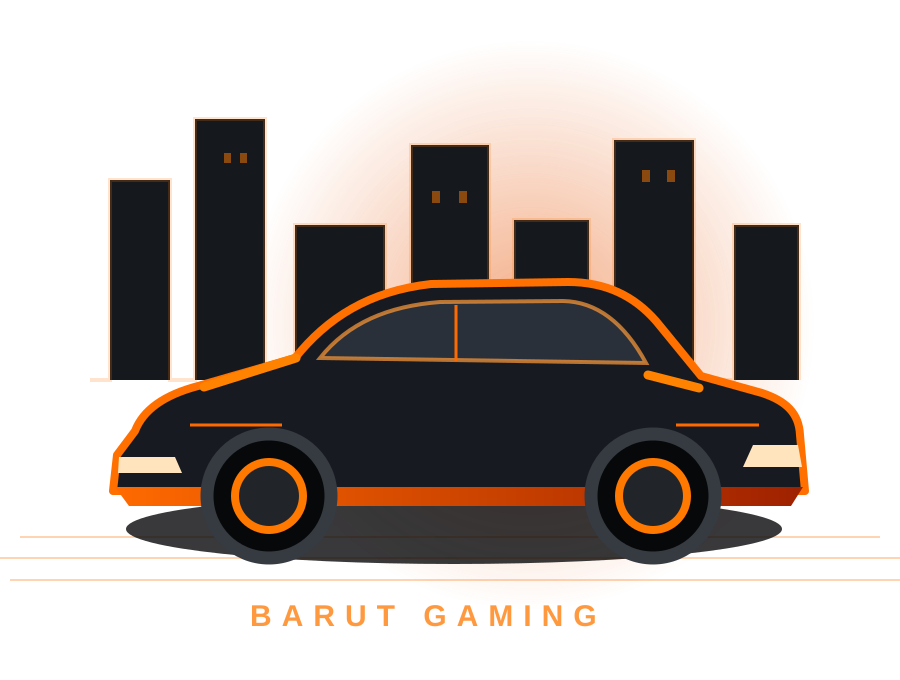

ÖZEL ARAÇLAR
Stil sahibi araçlarla sokaklara çık, araç kontrol sistemlerini keşfet.
Şehrin kurallarını sen yaz. Direksiyona geç, tarzını göster ve özgürlüğü Barut Gaming'de yaşa.
Sürüş, etkinlik ve özgürlüğün buluşma noktası.

MTA:SA yüklüyse bağlan butonu oyunu açar. IP bilgisi yönetici tarafından tanımlanmalıdır.
Barut Gaming'in freeroam deneyimini farklı kılan sistemleri keşfet.
Stil sahibi araçlarla sokaklara çık, araç kontrol sistemlerini keşfet.
Turuncu-siyah temalı arayüz, atmosferik efektler ve karakteristik grafikler.
↗Oyun içi coin sistemi, özel ekipmanlar ve kazanılacak yeni hedefler.
↗Kendi rotanı çiz, dilediğin gibi sür ve San Andreas'ı yeniden keşfet.
↗Ekibini kur, arkadaşlarınla buluş ve topluluğun bir parçası ol.
↗Türkçe, İngilizce, Rusça ve Brezilya Portekizcesi ile dünyaya açık topluluk.
↗Duyurular, güncellemeler, etkinlikler ve yeni arkadaşlıklar için Barut Gaming topluluğuna katıl.
Senin hikâyen burada başlıyor.
Güncellemeler ve etkinlik duyuruları bu alanda yayınlanır.
Duyurular yönetici tarafından site ayarlarından düzenlenebilir.
Herkes için keyifli bir oyun ortamı oluşturmak bizim elimizde.
BG.Bağlantı, kurulum ve topluluk hakkında en çok sorulan sorular.
San Andreas seni bekliyor. Barut Gaming Freeroam'a katıl.